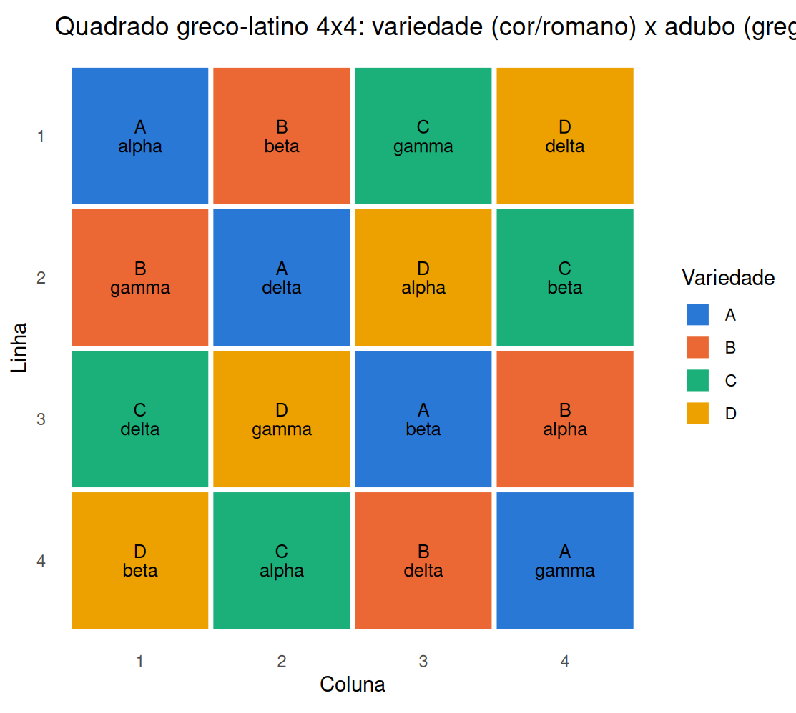

4.5 Delineamento em quadrado greco-latino
Quando há três fontes de bloqueio cruzadas — ou, equivalentemente, duas fontes de bloqueio e um segundo fator de tratamento que se deseja controlar simultaneamente à primeira — o quadrado greco-latino sobrepõe dois quadrados latinos ortogonais de ordem \(n\): um com letras romanas (A, B, C, …) e outro com letras gregas (\(\alpha,\beta,\gamma,\dots\)), construídos de modo que cada par (letra romana, letra grega) ocorra exatamente uma vez no quadrado \(n\times n\). Isso só é possível quando existe um par de quadrados latinos ortogonais de ordem \(n\) — a próxima subseção formaliza para quais \(n\) isso vale, e conta a história de sua exceção mais famosa.
4.5.1 Quadrados latinos mutuamente ortogonais (MOLS): existência e o problema de Euler
Dois quadrados latinos \(L_1\) e \(L_2\) de ordem \(n\) são ortogonais se, ao sobrepô-los, cada um dos \(n^2\) pares ordenados de símbolos \((L_1(i,j), L_2(i,j))\) ocorre exatamente uma vez — a propriedade exigida na construção do quadrado greco-latino acima. Um conjunto de \(k\) quadrados latinos de ordem \(n\), ortogonais dois a dois, é chamado de MOLS de ordem \(n\) (mutually orthogonal Latin squares), denotado \(\text{MOLS}(n,k)\).
Cota superior. O número máximo \(N(n)\) de quadrados latinos de ordem \(n\) mutuamente ortogonais satisfaz \[ N(n) \le n-1 \] (Dean et al., 2017; Montgomery, 2017). Esse máximo é atingido — existe um conjunto completo de \(n-1\) MOLS — sempre que \(n\) é uma potência de primo: identificando os \(n\) símbolos com os elementos do corpo de Galois \(GF(n)\), os \(n-1\) quadrados \(L_a(x,y) = ax+y\) (aritmética em \(GF(n)\)), para \(a\in GF(n)\setminus\{0\}\), são ortogonais dois a dois — duas linhas \(x,x'\) de \(L_a\) coincidem em coluna \(y\) apenas se \(ax+y=ax'+y\), ou seja \(x=x'\), e o mesmo argumento aplicado a \(L_a(x,y)-L_{a'}(x,y)=(a-a')x\) garante que \(L_a\) e \(L_{a'}\) (\(a\ne a'\)) nunca repetem um par \((s,t)\). Essa é exatamente a construção por trás dos exemplos de quadrado greco-latino desta seção (que usam \(n=4=2^2\), potência de primo).
n_mols <- 5 # primo: GF(5) = Z_5 com aritmetica usual
mols5 <- lapply(1:(n_mols - 1), function(a) {
outer(0:(n_mols - 1), 0:(n_mols - 1), function(x, y) (a * x + y) %% n_mols)
})
ortogonais <- function(A, B) length(unique(paste(A, B))) == n_mols^2
pares_idx <- combn(1:(n_mols - 1), 2)
todos_ortogonais <- all(apply(pares_idx, 2, function(p) ortogonais(mols5[[p[1]]], mols5[[p[2]]])))
c(quadrados_construidos = length(mols5), maximo_teorico = n_mols - 1,
todos_pares_ortogonais = todos_ortogonais)## quadrados_construidos maximo_teorico todos_pares_ortogonais
## 4 4 1Os 4 quadrados \(L_1,\dots,L_4\) atingem exatamente a cota \(N(5)\le4\) — um conjunto completo de MOLS de ordem 5.
A exceção de Euler: o problema dos 36 oficiais (\(n=6\)). Em 1782, Euler propôs o problema dos 36 oficiais: arranjar 36 oficiais, provenientes de 6 regimentos e com 6 postos distintos — um oficial de cada posto por regimento —, em uma formação \(6\times6\) de modo que cada fileira e cada coluna contenha exatamente um oficial de cada posto e um de cada regimento. Isso é, exatamente, um quadrado greco-latino de ordem 6 (postos = letras romanas, regimentos = letras gregas), e portanto exige um par de quadrados latinos ortogonais de ordem 6, ou seja, \(N(6)\ge2\). Euler não encontrou solução e conjecturou que não existe nenhuma; Tarry (1900) confirmou a conjectura por enumeração exaustiva de todos os quadrados latinos de ordem 6: \(N(6)=1\) — não há sequer um par de quadrados latinos ortogonais de ordem 6, o único caso, entre todas as ordens \(n\ge3\), em que o quadrado greco-latino é impossível de construir.
O caso geral. Euler foi além do caso \(n=6\) e conjecturou que \(N(n)=1\) (nenhum par ortogonal) para todo \(n\equiv2\pmod4\), isto é, \(n=2,6,10,14,18,\dots\) — o caso \(n=2\) é trivial (só existe um quadrado latino de ordem 2, a menos de renomear símbolos, então nada pode ser ortogonal a ele). Essa conjectura mais geral permaneceu em aberto por quase 180 anos, até que Bose, Shrikhande e Parker (1960) a refutaram: construíram explicitamente pares de quadrados latinos ortogonais para todo \(n\equiv2\pmod4\) com \(n\ge10\) — ficando conhecidos, por isso, como os “Euler spoilers”. Combinando esse resultado com a verificação direta de Tarry para \(n=6\) e a trivialidade de \(n=2\), o quadro completo é \[ N(n)\ge2 \quad \text{para todo } n\ge3 \text{ exceto } n=6. \] Ou seja: \(n=6\) não é apenas um exemplo de dificuldade — é a única ordem, entre todas as possíveis, em que o quadrado greco-latino simplesmente não existe (Bose et al., 1960; Tarry, 1900).
4.5.2 O modelo
\[ Y_{ijkl} = \mu + \rho_i + \gamma_j + \tau_k + \omega_l + \varepsilon_{ijkl}, \]
com \(\rho_i\) (linha), \(\gamma_j\) (coluna), \(\tau_k\) (tratamento romano) e \(\omega_l\) (tratamento grego), \(i,j,k,l=1,\dots,n\), novamente com apenas \(n^2\) observações — cada uma das quatro fontes consome \(n-1\) graus de liberdade, restando \((n-1)(n-3)\) para o erro.
| Fonte de variação | Graus de liberdade |
|---|---|
| Linha | \(n-1\) |
| Coluna | \(n-1\) |
| Tratamento (romano) | \(n-1\) |
| Tratamento (grego) | \(n-1\) |
| Erro | \((n-1)(n-3)\) |
| Total | \(n^2-1\) |
Com \((n-1)(n-3)\) graus de liberdade para o erro, o quadrado greco-latino só é útil quando \(n\) é razoavelmente grande — em \(n=4\), restam apenas 3 graus de liberdade, insuficientes para uma estimativa confiável do erro na prática, mas ainda ilustrativos para o exemplo abaixo.
Ao experimento de quadrado latino anterior (linha = declividade, coluna = umidade, tratamento romano = variedade de semente), acrescenta-se um segundo fator de tratamento — tipo de adubo ($\alpha,\beta,\gamma,\delta$) — que também se deseja balancear perfeitamente contra variedade, linha e coluna, sem aumentar o número de parcelas.
L1 <- matrix(c(1,2,3,4, 2,1,4,3, 3,4,1,2, 4,3,2,1), nrow = 4, byrow = TRUE) # letras romanas
L2 <- matrix(c(1,2,3,4, 3,4,1,2, 4,3,2,1, 2,1,4,3), nrow = 4, byrow = TRUE) # letras gregas
romanos <- c("A","B","C","D")
gregos <- c("alpha","beta","gamma","delta")
dados_glq <- expand_grid(linha = 1:4, coluna = 1:4) %>%
mutate(
roman = factor(mapply(function(i, j) romanos[L1[i, j]], linha, coluna), levels = romanos),
grego = factor(mapply(function(i, j) gregos[L2[i, j]], linha, coluna), levels = gregos),
linha = factor(linha), coluna = factor(coluna)
)
n_distinct(paste(dados_glq$roman, dados_glq$grego)) # 16: todo par (romano, grego) aparece 1 vez## [1] 16A sobreposição dos dois quadrados fica mais concreta como diagrama: a cor de cada célula marca a variedade (letra romana), e o rótulo mostra o par completo (variedade, adubo).

O padrão de cores reproduz exatamente o quadrado latino de variedades da seção anterior — cada cor (romano) ainda aparece uma vez por linha e uma vez por coluna —, mas agora cada célula também traz um rótulo grego, e nenhum par (romano, grego) se repete no quadro inteiro: é essa dupla ortogonalidade, visível de imediato, que permite estimar os efeitos de variedade e de adubo simultaneamente, além de linha e coluna, com as mesmas 16 unidades experimentais do quadrado latino original.
set.seed(33)
ef_roman <- c(A = 0, B = 2, C = 4, D = 1)
ef_grego <- c(alpha = 0, beta = 1, gamma = -1, delta = 2)
dados_glq <- dados_glq %>%
mutate(resposta = round(30 + ef_roman[as.character(roman)] + ef_grego[as.character(grego)] +
rnorm(n(), 0, 1.5), 2))
mod_glq <- aov(resposta ~ linha + coluna + roman + grego, data = dados_glq)
anova(mod_glq) %>% broom::tidy() %>%
kable(digits = 4, caption = "ANOVA do quadrado greco-latino 4x4 (dados simulados)") %>%
kable_styling(full_width = FALSE)| term | df | sumsq | meansq | statistic | p.value |
|---|---|---|---|---|---|
| linha | 3 | 5.8191 | 1.9397 | 0.7245 | 0.6013 |
| coluna | 3 | 0.6709 | 0.2236 | 0.0835 | 0.9645 |
| roman | 3 | 55.7674 | 18.5891 | 6.9428 | 0.0729 |
| grego | 3 | 52.2580 | 17.4193 | 6.5059 | 0.0792 |
| Residuals | 3 | 8.0325 | 2.6775 | NA | NA |
Com apenas 3 graus de liberdade para o erro, os testes-\(F\) de variedade e adubo ficam pouco sensíveis (\(p\approx0{,}07\) e \(p\approx0{,}08\), respectivamente, apesar de os efeitos simulados serem reais) — o preço de controlar quatro fontes de variação com só 16 unidades experimentais. Na prática, quadrados greco-latinos só compensam quando \(n\) é grande o bastante para deixar um erro estimável com confiança, ou quando são replicados como na Seção anterior.
- Por que o modelo de um quadrado latino não permite estimar uma interação entre linha e tratamento, ao contrário de um fatorial completo linha$\times$tratamento?
- No exemplo do painel sensorial (BIB), por que faz sentido balancear a frequência com que cada par de variedades é degustado junto, e não apenas garantir que cada variedade apareça o mesmo número de vezes no total?
- Um pesquisador tem $n=4$ tratamentos e poderia usar um quadrado latino $4\times4$ (16 unidades) ou um DBCA com 4 blocos de 4 unidades cada (também 16 unidades, mas controlando só uma fonte de bloqueio). Em que condições vale a pena "gastar" o grau de liberdade extra do quadrado latino controlando uma segunda fonte de variação, em vez de usá-lo para estimar o erro com mais precisão?